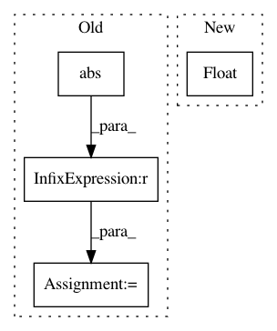

d7df3585734f7d0326d5f854d8f16fe3b3d06373,mir_eval/boundary.py,,detection,#Any#Any#Any#Any#Any#,49
Before Change
n_ref, n_est = len(reference_boundaries), len(estimated_boundaries)
window_match = np.abs(np.subtract.outer(reference_boundaries, estimated_boundaries)) <= window
window_match = window_match.astype(int)
// L. Lovasz On determinants, matchings and random algorithms.
// In L. Budach, editor, Fundamentals of Computation Theory, pages 565-574. Akademie-Verlag, 1979.
//
// If we build the skew-symmetric adjacency matrix
// D[i, n_ref+j] = 1 <=> ref[i] within window of est[j]
// D[n_ref + j, i] = -1 <=> same
//
// then rank(D) = 2 * maximum matching
//
// This way, we find the optimal assignment of reference and annotation boundaries.
//
skew_adjacency = np.zeros((n_ref + n_est, n_ref + n_est), dtype=np.int32)
skew_adjacency[:n_ref, n_ref:] = window_match
skew_adjacency[n_ref:, :n_ref] = -window_match.T
matching_size = np.linalg.matrix_rank(skew_adjacency) / 2.0
precision = matching_size / len(estimated_boundaries)
After Change
window)
precision = float(len(matching)) / len(estimated_boundaries)
recall = float(len(matching)) / len(reference_boundaries)
f_measure = util.f_measure(precision, recall, beta=beta)
In pattern: SUPERPATTERN
Frequency: 3
Non-data size: 4
Instances
Project Name: craffel/mir_eval
Commit Name: d7df3585734f7d0326d5f854d8f16fe3b3d06373
Time: 2014-04-18
Author: brm2132@columbia.edu
File Name: mir_eval/boundary.py
Class Name:
Method Name: detection
Project Name: NVIDIA/sentiment-discovery
Commit Name: 81658f79c135ce6e04d89a0055d7090d5efea80e
Time: 2018-08-10
Author: raulp@dbcluster.nvidia.com
File Name: fp16/loss_scaler.py
Class Name: DynamicLossScaler
Method Name: _has_inf_or_nan
Project Name: tsurumeso/waifu2x-chainer
Commit Name: 055c61d73514d471158ee36b83762802c8d4e3d4
Time: 2018-07-14
Author: tsurumeso@gmail.com
File Name: lib/loss/clipped_weighted_huber_loss.py
Class Name: ClippedWeightedHuberLoss
Method Name: backward